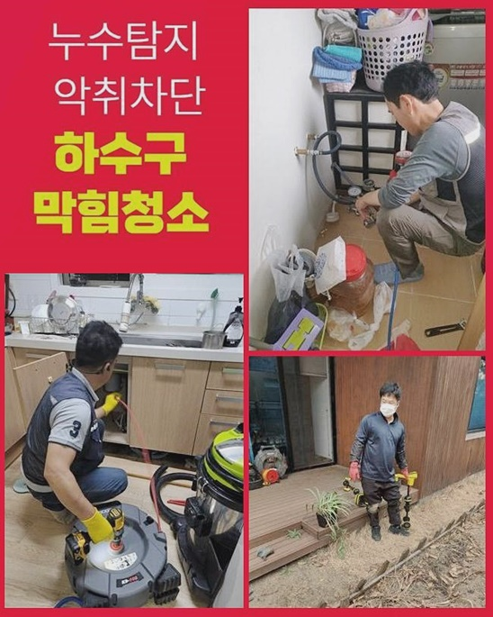
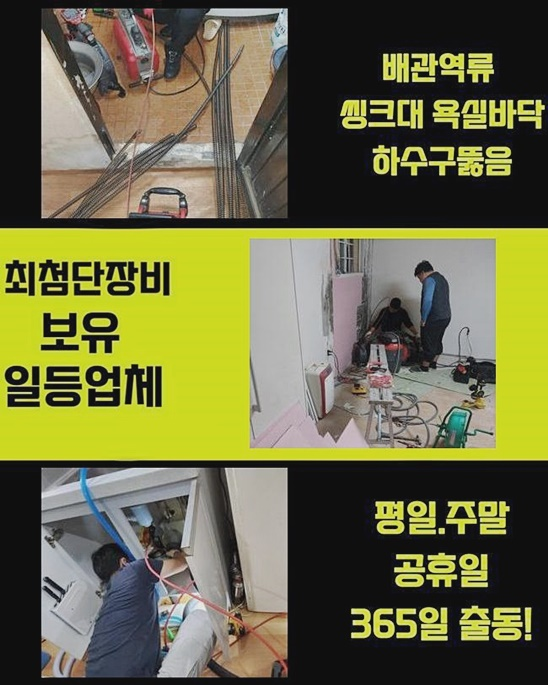
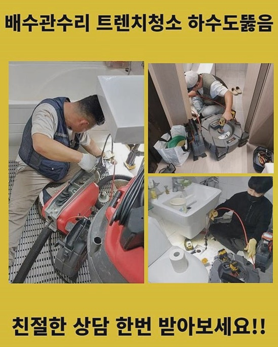
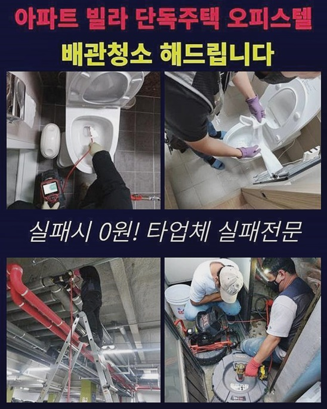
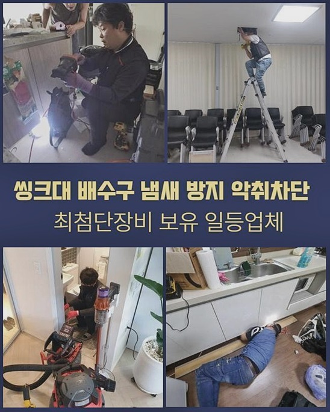
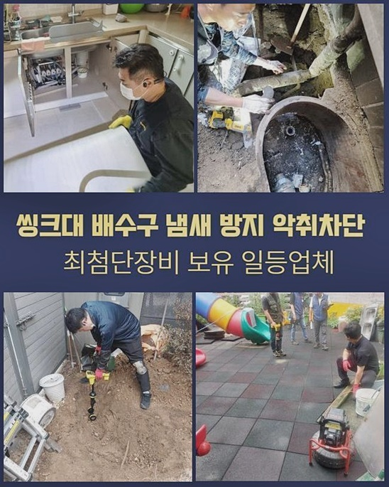

🏠 부천 원종동세탁실역류 신흥동 하수구청소장비 누수
용인시 처인구 배관막힘 전문 시공 후기

📋 작업 개요
- 위치: 용인시 처인구, 수원시 영통구, 화성시 동탄
- 서비스 유형: 배관막힘, 하수구청소, 누수수리, 고압세척, 내시경점검
- 작업 일시:
- 업체명: 하수구수사대 (010-5615-2118)
🔍 문제 상황
부천 원종동세탁실역류 신흥동 하수구청소장비 누수
당장 와달라는 요구사항이 있더라도 시간에 구애받지 않고 물길을 내어드린다는 소신을 갖고 작업합니다
여러 장치와 기수로 동반되기 때문에 상황에 맞는 공법으로 장애요소를 소거해 드렸습니다
얼른 와달라고 전화주신 덕에 적시에 능동적인 시공이 이뤄졌고 시공이 끝난 후에 즉각 시설물을 되찾게 되셨습니다
현황을 분석했더니 당장 범람하는 사태까지는 일어나지는 않았지만 보일러실의 곤란함으로 막대한 문제까지도 야기될 가능성도 농후했던 이슈였습니다
비정상적인 것을 발견한 즉시 저희를 찾아내게 되어 행운이라고 말하셨는데 자칫 잘못하면 부대적인 지출이 생길 수 있었습니다
미미한 점이라도 재빠르게 손을 봐줘야만 보다 악화된 사태를 억제할 수 있는 방책이 됩니다
장애요소가 보인다고 말씀하셔서 얼른 체크해보고 사태를 진정시켜드린 작업 장소였습니다
품이 들어가는 다른 일들이 생겨버리기 전에 기민하고 무결점으로 고칠 수 있게끔 두루 신경쓰면서 하수구시설을 고쳐드립니다
한밤 중이지만 고객님이 전화주신 다급함을 알기에 늘상 책임감있는 태도로 언제 어디라고 하더라도 전문적 조치를 취해드리는 건 기본적 의무라고 봅니다
저희는 항상 민첩한 움직임으로 설비를 회복시키고 다용도의 장치를 가졌기에 통행의 문제가 생겨도 원만하게 물길을 낼 수 있어요!
간과하고 놔둔다면 문제는 크게 드러나지 않겠지만 길게 이어진다면 더 큰 파장으로 시한폭탄처럼 증폭될 수 있어요

🔎 원인 분석
💡 전문가 진단: 정밀 진단 장비를 사용하여 슬러지의 고착 여부를 판명하고 타격/세척 작업을 실시했습니다.
하수관은 워낙 예민하기에 자연히 물에 휩쓸려서 통로가 트이지않을까 기대하시더라도 쉽사리 이뤄지지는 않아요
작업지에 간 즉시 내시경카메라를 활용해서 명확한 사유를 밝혀내고 적절한 수단을 통해서 효율적으로 해당 난제를 손봐드립니다
여러 작업건으로 형성한 체험 내역을 토대로 총체적인 진단과 합리적인 청소과정을 거쳐서 무결점의 변화를 만들어 드립니다
물이 내려가는 길목이 개방되면 내시경을 관로를 따라 넣어 배관 속의 현황을 판단해 보기로 정했어요
해당 기기는 얇은 통로인 배관을 샅샅이 체크할 수 있는 촬영기와 전등이 함께 붙어있어요
안에 머무르고 있는 찌꺼기의 유형이나 오류가 생겨버린 구간을 명확하게 분별하게 됩니다
세정제의 찌꺼기나 모발이 한몸처럼 조성되어서 중점적으로 치워나갔어요
작업 과정 중에 고객님도 모니터링을 거치면서 관로의 현상황을 인지하도록 도왔는데 머리카락 뭉치가 이정도로 잔뜩 끼어있을 줄 몰라 놀랐다하셨어요
내부로 내시경을 들여보내서 부족한 측면을 확인해가면서 제대로 세척에 임하지 않으면 재차 같은 문제가 생겨요
하수관 안의 장애물은 장시간 두면 바위처럼 단단해지기에 조정하기 보다 난해해질 수 있습니다
고객님 선에서 하는 조치로는 명쾌한 통로의 회복을 누리기는 사실 힘들기에 전문적인 조치를 요청하는 게 현명합니다
이번 시공의 대상지는 복합주거단지로 딱봐도 낡아보였었고 여러 세대가 한데 모여 사는 구조였습니다

🔧 작업 과정
이런 파트는 하수구가 사용량이 많기때문에 하수배관 시스템의 곤란함이 피어날 확률이 농후합니다
이용했던 물이 통쾌하게 처리되지 않은 채 축적되면 파이프 내부에서 하자가 만들어질 수도 있으므로 조심해야 할 대목입니다
상황전반을 파악하고 적합한 해결책이 도입된다면 건물에 심한 데미지가 발생하는 현상 자체를 예방할 수 있습니다
하수구에 이물질이 쭉 쌓이다보면 다쳐서 누수 사건까지 발현되어 이에 따라 건물의 내구력에 부정적 결과를 야기해서 복잡한 시공으로 발전하고 맙니다
약간의 노폐물만 머물러 있더라도 고정된 채 세월이 흘러가 버리면 견고하게 접착되어서 척결하기가 까다로운 정도로 진전되기 때문에 더욱 신중히 작업해야 합니다
카메라를 통해 이물질이 보이기 시작한다면 목표로 삼고 플렉스샤프트를 가동해서 철저하게 청소해 내는 것이 필요하다고 할 수 있어요
관로에 카메라를 넣고 청소한 다음의 관로를 다시금 살펴보고 노폐물을 근절하는 절차를 통과해야 합니다
남아있는 잔량이 보이면 빠르게 소거시켜서 재차 결함이 생겨나는 경우의 수를 막는거예요
배수로의 정화작업에 들어서면 잘 개선됐나 살펴가며 배관 벽면을 청결하게 유지하는 작업이 필요한 겁니다
이번 작업에 쓴 샤프트장치는 내부를 스케일링해 주는 기능이 탁월한 기계에요
장치의 끝에 부착된 노커가 스피드있게 돌면서 벽에 단단히 붙어버린 오염물질을 분해해 줍니다
제가 강조드리는 부분이지만 오염원은 생각보다 쉽게 관로 내로 이동한다면 별도의 조치가 없다면 더욱 양이 늘어납니다
막힘이 오래유지된다면 상당한 인력 투입과 지출이 투입되어야 해결이 됩니다
파이프는 소모품이라 세월이 지나면서 약화되기 마련이니 하수관로의 불건강한 증세들을 불러올 수 있습니다
파이프가 오래될수록 끈적한 슬러지들이 많이 쌓여서 하수의 폐기 과정을 약화시킬 수 있으며 악취와 함께 덩어리로 변모하다가 좁은 관로에 들어차 버립니다
설비에 대해 정기진단을 받고 하수도 전문청소도 받아야 하며 시설물이 부실해 지지 않게끔 설립일자가 오래된 빌딩이면 더욱 노력을 기울여야 해요
하수구 구멍을 통해서 내부에서 오래 부패되어 온 불순물이 울컥대며 올라오기도 하므로 이러한 사고를 막기 위해서는 부담되시더라도 정규 클렌징을 해주는 단계가 들어가야 합니다
불순물이 이미 널리 퍼져서 적층되어있는 경우라면 고압살균기를 틀어서 접착된 것들을 세척하는 것이 명쾌한 방식입니다
정확도 떨어지는 셀프조치 대신에 막힘의 초기단계부터 전문가의 호출을 의뢰하여 본질적인 막힌 사유를 탐색하고 최적의 대응책을 취하는 작업이 필요한 겁니다
배관 관련 지식들이 미미한 분이라면 무대포로 뚫음업무를 단행하기 보다는 전문케어에 들어가기까지 기다리는 게 낫습니다


✅ 작업 완료
약한 쪽을 건드리기라도 하면 배관이 갈라지거나 동강나는 등의 자재 값부터 엄청난 시공이 일어나야 하는 사태가 빚어져서 부담스러우실 겁니다
철두철미한 작업 진행과 최적화된 청소 기법을 써서 물의 흐름을 되돌려 드리고 잘 처리가 되었는지 철저하게 마무리 검수하고 있습니다
항상 첨단 장치를 동원하고 있기에서 고객님의 쾌적한 설비시설을 구축하기위해 내 일처럼 임하고 있습니다
현황을 보는 촬영기기까지도 전적으로 가져가기 때문에 어떤 조건일지라도 원래대로 회복시켜 드립니다
하수 유속이 느릿해지는 사태가 도래한다면 얼른 저희에게 간단한 절차의 접수만 거쳐주시면 명쾌한 서비스를 통하여 건강한 설비로 되돌려드릴게요



⚠️ 하수구 배관 막힘 예방 및 관리 가이드
- ✅ 머리카락, 비닐, 물티슈 등 물에 분해되지 않는 이물질은 절대 흘려보내지 마세요.
- ✅ 기름기 많은 식기는 설거지 전 키친타올로 먼저 기름때를 닦아내세요.
- ✅ 주기적으로 배수구에 뜨거운 물을 가득 부어주어 유지방 고착을 방지하세요.
- ✅ 작업 후 1년 이내 재발 시 무상 A/S 보증 서비스를 제공합니다.
💡 핵심 정리
- 확실한 장비 작업(내시경 점검 및 샤프트 스케일링)으로 원인을 뿌리 뽑습니다.
- 작업 후 1년 이내에 동일한 부위 재발 시 100% 무상 A/S 서비스를 보장합니다.
- 서울 · 경기 · 인천 전 지역에 24시간 언제든 긴급 출동할 수 있도록 항시 대기 중입니다.
❓ 자주 묻는 질문 (FAQ)
🚨 용인시 처인구 배관막힘 문제로 고민이신가요?
정확한 원인 진단과 확실한 시공으로 재발 없는 해결을 약속드립니다.
24시간 긴급 출동 | 서울 · 경기 · 인천 전지역 | 1년 내 재발 시 무상 A/S